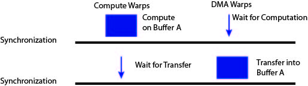
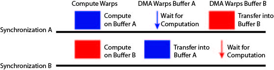
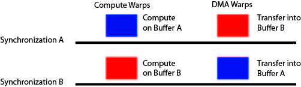

CudaDMA
CudaDMA
Emulating DMA Engines on GPUs for Performance and Portability
Buffering Techniques
The CudaDMA API is sufficiently powerful to support several different buffering techniques to overlap computation and memory transfers. We've found that different techniques perform better in different circumstances. We now outline each of the different techniques and the conditions under which each technique performs best.
Single Buffering
Single buffering describes the case when for each input that needs to be loaded into shared memory, there will be a single shared memory buffer and a single CudaDMA object managing that buffer. Most of the examples shown of CudaDMA are instances of single buffering.
The execution model for single buffering can be seen in the following figure.
In this figure the large rectangles indicate that the warps are actively doing work, while thin arrows indicate that the warps will move quickly to the next barrier. As can be seen in the figure, with single buffering a threadblock will always be in either a DMA phase or a compute phase.
To actually overlap computation and memory accesses with single buffering the programmer must ensure that multiple threadblocks are placed on a single SM at a time. This technique relies on the hardware warp scheduler to overlap computation and memory accesses similar to how non-CudaDMA code works. However, CudaDMA can still provide performance gains over non-CudaDMA code by making better use of the memory system in the implementation of the CudaDMA objects. Therefore even though single buffering uses the same overlapping technique as non-CudaDMA code, single buffering with CudaDMA is still capable of conferring performance benefits.
Single buffering is best used when resources such as shared memory and registers are already constrained. These kernels cannot afford the additional register and shared memory usage of the other buffering techniques. Kernels that are good candidates for single buffering, are also good candidates for using CudaDMA without explicit warp specialization as described in the CudaDMA programming model.
Double Buffering
The next buffering technique that the CudaDMA API supports is double buffering. For every input that must be read into shared memory, there will be two buffers and two CudaDMA objects (one for each buffer). The compute threads will then alternate between using a different buffer on each iteration of its loop. Note that this technique requires twice as many DMA threads as single buffering since each CudaDMA object will manage a different set of DMA threads. The execution model for double buffering can be seen in the figure below, with large blocks indicating the warps are actively performing work and thin arrows indicating threads quickly moving onto the next synchronization point.
Unlike single buffering, double buffering does not rely on the underlying hardware to overlap computation and memory accesses. From the above figure we can see that the compute threads are always busy and at least one set of DMA warps is busy at all times. Double buffering does not require multiple threadblocks per SM to hide memory latency.
Double buffering is best used for kernels which are memory bound and are not limited by shared memory or register constraints. The advantage of double buffering comes from having twice as many DMA threads to issue loads to the memory system which will better exploit the memory level parallelism in the application. However, double buffering does require twice as many shared memory buffers and twice as many DMA threads which use additional registers. Double buffering therefore works best on applications that need to exploit additional memory level parallelism and are not resource constrained.
Manual Double Buffering
The last buffering technique supported by the CudaDMA API is called manual double buffering. Manual double buffering is similar to double buffering because there are two shared memory buffers for each input and the compute threads will alternate between using each buffer. However, instead of loading these buffers with two sets of DMA threads, as in double buffering, there will only be one set of DMA threads. While the compute threads are reading from one buffer the DMA threads will be loading the other buffer. The compute and DMA threads will then alternate between the buffers on which they are operating. This execution model is illustrated in the following figure.
In order to facilitate managing both buffers in a manual double buffering scheme, a CudaDMA object is associated with each buffer. However, this means there are two different CudaDMA objects each using the same set of DMA threads. In the code for the DMA threads there will then be calls issued to both CudaDMA objects. Since it is the programmer's responsibility to manage the same set of DMA threads with two different CudaDMA objects we refer to this as manual double buffering.
Manual double buffering is best suited for applications that need CudaDMA to exploit memory level parallelism, but are too register constrained to support the double buffering technique with two distinct sets of DMA threads. Manual double buffering provides most of the benefit of double buffering without the register overheads of having two sets of DMA warps. The only case where double buffering does not perform as well as double buffering is when a single set of DMA warps is insufficient to fully saturate the memory system. In these cases double buffering will perform better than manual double buffering.